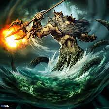
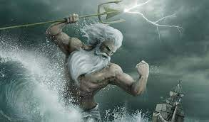
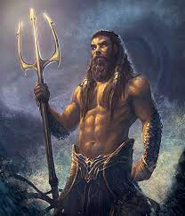
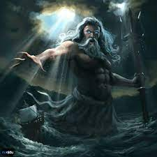

Poseidon Kimdir?
Poseidon "Ey Yerleri Sarsan" veya "Kara saçlı" Tanrı olarak da çağrılır. En önemli silahı Trident denen üç dişli bir yabadır ve bu yabayı yere vurduğunda depremler meydana gelir. Poseidon hırs ve gücü temsil eder. Poseidon'un hırsı Atlantis'in yok olmasına sebep olmuştur. Bunun nedeni ise Dünya'nın en mükemmel şehrini inşa etme arzusudur. Karanlığın ve işkencenin tanrısı olan "Gorgos'la" ölümüne savaş içindedir. Karanlığın ve işkencenin tanrısı olan "Gorgos", Zeus'u kıskanmaktadır. Bu yüzden Olimpos'ta kargaşa ve kaos yarattığından güçleri bir taşa hapsedilerek ve bir şart koyularak serbest bırakılmıştır. Bu şart ise "ne zaman birini öldürmek üzere olsa ona bir dilek hakkı vermektir". Fakat o, bu dilekleri çok iyi inceleyerek onu dileyenin aleyhine bir şekilde gerçekleştirmektedir.
Poseidon "Dorlar'ın" göçlerinden önce "Peloponnesos" ile "Boiotia'da" saygı görürdü. Üç dişli yabası ile denizleri allak bullak eder, karaları sarsar, depremler yollardı. Bunun için "Poseidon'a" "Enosikhthon" ile "Gaeiokhos" (yerin altında yürüyen) de denir. Üçlü yabasını vurunca topraktan ve kayalardan su fışkırttığı için, bol su kaynaklarının tanrısı olarak da adlandırılır. Denizin dibindeki görkemli sarayından çıktığında, denizatlarının çektiği altın arabasına binerek denizleri dolaşır, fırtınalar yaratırdı. Denizciler güvenli bir yolculuk için ona yakarırdı. Ayrıca atların da tanrısıydı; En eski efsanelerde sık sık at şeklinde tasvir edilir. Poseidon Şerefine tertiplenen araba yarışları içinde, Korinthos'ta yapılan İsthmia yarışları en meşhurlarıdır. Atina'daki Erekhteion'da, Poseidon'la Athena arasındaki yarışın izleri görülür; Poseidon, üç dişli asasını vurunca kaya da koca bir yarık açılmıştır ve bu yarıktan insanların işine yaramayacak olan tuzlu deniz suyu çıkmıştır. Zeus'un kızı olan Athena'ya Atina'daki yarışmada yenilmiştir. Gigantlar arasındaki karşıtı Polibot'tur.

<<< Hades'e GitZeus'a Git >>>